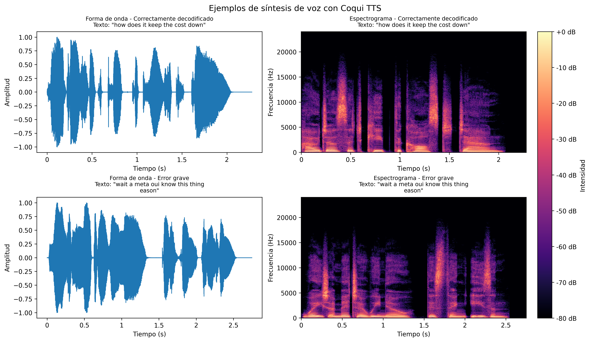

Esta página recoge ejemplos de audio generados mediante Coqui TTS a partir de predicciones textuales obtenidas por la variante fonética del sistema "brain-to-text" desarrollado en el TFM.
La siguiente figura muestra la forma de onda y el espectrograma de los dos audios seleccionados.

Texto de referencia: How does it keep the cost down
Texto predicho: how does it keep the cost down
Texto de referencia: Wait a minute we know this thing isn't
Texto predicho: wait a meta oui know this thing eason